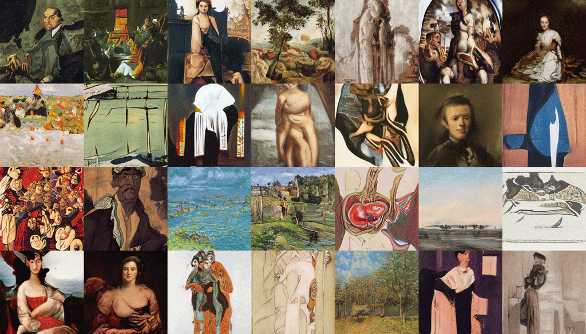

A Walk Through Latent Space
2019 — Making Art with Neural Networks
Note from the future: This project was made in 2019, in the days before MidJourney and other mainstream Generative AI apps existed. While primitive by today's standards, seeing this model train successfully was mind-blowing at the time. Below is the preserved entry from the time of its creation.
These are not paintings. At least not in the normal sense of the word. They are machine hallucinations, produced by a neural network that was trained on a dataset of Fauvist art — a group of French artists at the turn of the 20th century, who influenced modern masters like Picasso.

The Fauvist school was itself hallucinatory, with its bright colors and abstract compositions, fueled by absinthe and the natural beauty of Provence. This style lends well to a neural network generative approach, which produces images that feel like a hallucination, or a dream. What are these places, these people, these paintings? They feel familiar, like the neural net has captured not just an aesthetic, but memories of the past.
The number of Fauvist paintings is limited, so transfer learning was used — where a model that has already been trained on a wide range of generic art (stylegan-paintings) was used as a jumping-off point for continued training with the Fauvist image dataset. In this sense, this process mirrored the Fauves themselves — building on a base of classic art training, and riffing off the styles of their contemporaries. In the GIF above you can see the original model contrasted with the result of the transfer learning. In both models, the latent space is similarly organized — you can see a boy, a woman, a grove of trees, all in similar locations in the grid. This is not 'enforced' in any way — it is learned by the neural network as it ingests thousands of images. To me, one of the most fascinating outcomes is how quickly the transfer learning worked to make the original net's output look like Fauvist paintings; a classical looking woman becomes a woman who would not look out of place drinking absinthe in a French cafe circa 1880.